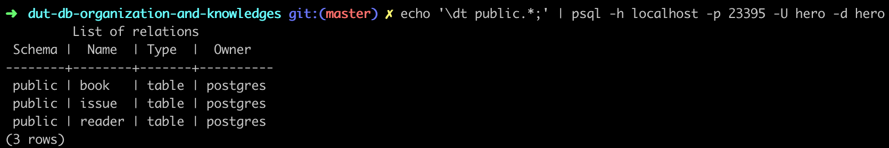

Онлайн версия доступна по ссылке
Опишем в файле postgres/migration/2-schema.sql схему:
CREATE TABLE book(
id SERIAL PRIMARY KEY,
code VARCHAR(25) UNIQUE NOT NULL,
author VARCHAR(100) NOT NULL,
name VARCHAR(500) UNIQUE NOT NULL,
publisher VARCHAR(100) NOT NULL,
published_at date,
pages INTEGER NOT NULL,
topic VARCHAR(100) NOT NULL,
costs MONEY NOT NULL,
created_at TIMESTAMP NOT NULL DEFAULT now(),
updated_at TIMESTAMP NOT NULL DEFAULT now(),
removed_at TIMESTAMP
);
GRANT ALL PRIVILEGES ON TABLE book TO hero;CREATE TABLE reader(
id SERIAL PRIMARY KEY,
last_name VARCHAR(50) NOT NULL,
first_name VARCHAR(50) NOT NULL,
middle_name VARCHAR(50) NOT NULL,
home_address VARCHAR(100) NOT NULL,
home_phone VARCHAR(13) NOT NULL,
work_phone VARCHAR(13),
created_at TIMESTAMP NOT NULL DEFAULT now(),
updated_at TIMESTAMP NOT NULL DEFAULT now(),
removed_at TIMESTAMP
);
GRANT ALL PRIVILEGES ON TABLE reader TO hero;CREATE TABLE issue(
id SERIAL PRIMARY KEY,
book_id INTEGER NOT NULL REFERENCES book(id),
reader_id INTEGER NOT NULL REFERENCES reader(id),
created_at TIMESTAMP NOT NULL DEFAULT now(),
return_at TIMESTAMP,
updated_at TIMESTAMP,
removed_at TIMESTAMP
);
GRANT ALL PRIVILEGES ON TABLE issue TO hero;docker образ БД построен таким образом, что при первом запуске он выполняет последовательно все файлы из каталога скриптов. По этому, чтобы применить миграции необходимо перезапустить контейнер.
docker-compose up --build
Выполним команду echo '\dt public.*' | psql -h localhost -p 23395 -U library -d library;
В результате postgreSQL-специфичный запрос \dt public.*; будет перенаправлен через stdin в программу psql, которая подключится с параметрами -h localhost -p 23395 -U library -d library к БД, выполнит запрос, завершится и вернет результат

Таблицы созданы и готовы к использованию.